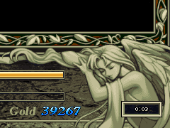

目次 > ゲームについて > 日本Falcom 攻略 > Ys > 情報
らんの眼
Ys(イース) Ys Eternal(VE)/Ys Complete
| 概要 | 情報 | ボス戦 |
| 敵キャラ一覧 | アイテム一覧 | 攻略チャート |
| 地図 | ダウンロード | イースの本 |
| 経験値表 | 地名一覧 | タイムアタック |
| ETERNAL / Complete 比較 | キャラクター一覧 | |
| Ys 攻略へ | 目次へ戻る |
| [ 1 ] [ 2 ] [ 3 ] [ 4 ] [ 5 ] [ 6 ] [ 7 ] [ 8 ] [ 9 ] |
| 特殊なセリフ：レアお姉ちゃんは○○ |
| これはComplete 限定のようです。 ミネアの町にいるレアの横に男の子がいる場合、男の子からレアの秘密(?)を知ることができます。 画像の下にカッコでセリフが見られるタイミングを書きましたが、あまり当てにしないでください。 (ルタ＝ジェンマ護衛直後) (スラフからTALWARL をもらった直後) |
| 特殊なセリフ：老人の寝言 |
| ゼピック村の湖に釣りをしている老人がいますが、特定のタイミングでおもしろい寝言を言うようです。 (ダームの塔へ行く前) |
| バルバドのピッガードの数 |
| バルバドの港町には、ピッガードを飼っている老人がいます。そして、彼の飼っているピッガードはゲーム進行により増えています。以下にゲーム進行とおおよその数を書きます。 ゲーム開始～サラに会う：4,5 匹 ～「クリスタル」をもらう：6,７ 匹 ～ジェノクレスを倒す：9,10 匹 ～サラの死を知る：11,12 匹 それ以降：13,14 匹 数にばらつきがあるのは、やはり食べちゃったのが原因なのでしょうか・・・。 |
| Reah's clock |
| Ys I・II Complete をインストールし、レジストリを見ると、「Reah's clock」という項目があります。これは、ゲーム中に時間を表示するかどうかの設定です。 この設定から、どうやらゲーム画面の枠に描かれている女神は、左がフィーナ、右がレアのようです。  |
| イースの本：ファクトの章 |
| ダルク＝ファクトを倒し、彼のマントの下を調べると、最後の「イースの本」を発見できます。 このとき、ダルク＝ファクトのマントは先端が風になびいており、よく見るとマントの下にイースの本が落ちているのが見えます。 |
| フィーナのレベルアップ |
| 「ミラー」を使い硬直させた敵に対しては、フィーナでも攻撃を与えることができます。そのため、これをうまく利用することで、フィーナもレベルアップさせることができます。 しかし、ただフィーナの攻撃を見ているだけだと効率が悪いので、アドルがフィーナの背中を押して無理矢理敵を攻撃させるといいです。 |
| [ 1 ] [ 2 ] [ 3 ] [ 4 ] [ 5 ] [ 6 ] [ 7 ] [ 8 ] [ 9 ] |
| 概要 | 情報 | ボス戦 |
| 敵キャラ一覧 | アイテム一覧 | 攻略チャート |
| 地図 | ダウンロード | イースの本 |
| 経験値表 | 地名一覧 | タイムアタック |
| ETERNAL / Complete 比較 | キャラクター一覧 | |
| ページ上部へ | Ys 攻略へ | 目次へ戻る |